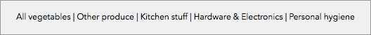

Resets and normalisations are agreements, and while they are certainly helpful, understanding their coverage really well is a good idea.
You generally can’t go wrong with a reset since its purpose is simply getting rid of styling-by-accident, which is what happens when you rely on browser-given styles for something. A normalisation, whether it’s something introduced by a library (and in the case of Normalize.css, you can think of it as a less brutal reset) or one you write yourself, has no business existing unless it’s very likely to be the case that they will be applying across every element that they touch.
A common example of normalisation is when styling paragraphs within a component, deciding that it probably means adding a default font size and margins on a root p tag selector as a first step. The problem is knowing whether that agreement won’t, in fact, create more work than it’ll prevent (the all too common behaviour of then erasing those defaults more than not). As much else, a better approach is to mindfully repeat yourself a little and only then refactor when repetition starts happening to a small but significant level.
In short: always reset, but be careful with normalisations.
If most people figured the correct way to drive is back-facing the wheel, that wouldn’t make it a good idea considering not colliding into things is important. This metaphor explains how most people understand and use the Cascading in Stylesheets. They’ll drive it backwards, hit something, and then go on Twitter say cars are inherently bad and that we all oughta be walking instead.
You need to control the cascading, and the best way to go about it is by not use it at first, and then apply it judiciously where it makes sense. It really is that simple. This has a big impact on further advice, so I’ll go on a little tangent here: early in the intro chapter, I referred to a SCSS file as a “module”. The approach to that which I’m selling here is as follows:
Each file/module will “export” one class selector, which maps to a given UI component, or an area in the screen. To keep things intuitive, the file name will match the selector name.
This selector will contain other selectors a maximum of one level deep. The purpose of that is allowing us to scope styling to the component, not to replicate the markup’s structure, which would do us a disservice.
In this file, besides styles relevant only to the component, we’ll also keep variables and media queries that apply to it.
As internal parts of a component become more complex, we move them into their own files.
Unlike CommonJS, or its well-known implementation, the Node.js module system, we aren’t getting the benefits of isolation in variable declaration and such with Sass. So everything is a global, and we have to live with that at least for now. On the upside, we will only ever declare variables when we need to coordinate a value across directives, either within the same file, or when the intention is making said value available to other modules. And then we’ll be making it really obvious that this module is now to be understood as a dependency.
This will let us:
Keep our agreements isolated, so even if we decide to do something like adding defaults to all buttons within a module, there’s still sanity in the fact it’s isolated:
.main-navigation {
// This applies to all buttons inside this selector.
button {
outline: none;
background: transparent;
}
}
Keep overrides still simple. Granted, to beat the one degree of specificity we adopted in order to gain scoping, we need to refer to the module’s root selector first. As in:
If you write code in other languages, you’ll notice these ideas are largely based on existing modularisation concepts. This is not by accident. Instead of running around with our heads on fire saying CSS is doomed to fail, we reap the benefits of existing logical frameworks that are similar to ideal mindsets we’re already applying elsewhere.
A Sass module is the implementation of all features in the component design, not just the code necessary to reflect a static snapshot of how things look. When you approach writing it with that mindset, things tend to go a lot better.
For instance, say you’ve received a mockup for a component that looks like this:

Most would simply write a horizontal list and call it a day. But ask yourself these:
Does the mockup really reflect how many items this list could have in average?
Is it possible that it’d have twice as many as what’s in the design? Or that any of the entries could be many words long? Or with a single, long word?
How is it supposed to look on smaller screens? Can we abbreviate the text? How would that look an entry wrapped across lines look?
It’s impressive how such a small component can yield this many questions, but thinking through these creates design that’s better at solving problems, which helps you avoid paying later with interest for what you don’t foresee initially only because you failed to address the basics.
Let’s assume that these are the answers:
Up to 8 items.
Long words are allowed.
Text can be abbreviated in small screens.
No breaking entries by wrapping lines.
That looks good, or as good as that’ll ever get. Another point this reveals is that most designs are always vulnerable in some ways, and won’t necessarily be the better solution anymore when enough changes are made in the environment that they’re in.
What was explained thus far suggests an approach to styling components that says we are using class names that describe what the component is, and all styles come from that class name (aside from styles shared across classes). This isn’t the only way to go about it, though.
Certain libraries will do the composition on the markup by adding various class names that carry a set of directives each, where then these class names are similar to ingredients carrying certain properties. For example, this snippet from [Semantic UI](http://semantic-ui.com/) (ignore the grossness of using a `div` for a button):
With the difference being that the class name the button exposes in the previous example carries a more descriptive name.
There are other patterns which make use of tag attributes, such as AMCSS, where the core group of directives comes from the attribute name am-Button, with modifiers being passable as values to it, as in:
Modifiers are class names that change the original set of styles in some way. You can think of them as parameters to a command that modify the outcome in a way that makes sense. In my own preferred approach, you let a few modifiers in that can be passed as “commands” to the class name, not unlike AMCSS in that regard:
// Default form styles
// ===================
.default-form {
// … Core styles go here.
&.vertical {
// Label on top of fields styles go here.
}
&.labels-left {
// Labels to the left of fields styles go here.
}
&.disabled {
// Styles for when the whole form is disabled.
}
}
Which lets you write markup like this:
<form class="default-form vertical">
…
</form>
Understand that this is all logic juggling. None of these patterns make problems disappear, but they’ll help you distribute them more sensibly. Some being more effective at that than others, but all still largely depending on how smartly you split that logic in the first place.
Manifests in stylesheets are lists of modules required to load a certain page. There are no hard rules on how to write these, but being clear can go a long way. Assume this is called `application-manifest.scss`:
In saying “page”, there’s an immediate problem that comes to mind: in JavaScript apps, there’s hardly such a concept past the initial delivery. So depending on how your website is used (this, by the way, is an important consideration when optimising), a lot of waste can happen with selectors that will never apply during a given session, and are loaded anyway.
The thing is: despite performance being very important, manifests are still useful for grouping modules. An approach coined recently by some consists of loading critical styles at the top of the page, and then the remaining at the bottom (and maybe even more fine grained than that, but bear with me). You can write two manifests, one essentials-manifest.scss sourced in the <head>, and a remaining-manifest.scss sourced before the <body> ends. This can be tricky to do effectively without splitting writing component styles between essentials and enhancements, as you don’t want the page to flash as entirely garbled for even a split second until things such as positional and dimensioning values are loaded.
But that doesn’t address the fact that you’re still potentially loading a lot of styles that won’t be used in a given session. The solution to this won’t be cheap logic-wise, but at the cost of some code in the build script, you can retain manifests as files, but output their compiled contents to a `style` attribute in the corresponding element, or even as a <style> tag directly in the DOM by using templates and helpers. An example of the former:
An easy to forego element when implementing a design is colour organisation. There’s a false sense of necessity when it comes to it that leads to sometimes dozens of imperceptible variations if put next to each other. That’s aggravated when a designer loses sight of the whole.
Colour, like the choice of typeset, is part of the message, and dillution happens when too many tones are introduced in a design. And a way to keep the issue visible is declaring the palette in a single file through variables, maybe named colour-palette.scss, and using it as a dependency. Like so:
Sass provides methods for manipulating colour, such as darken() and lighten(). These are handy for creating stale variations. That is, variations that will not be reused throughout the codebase, since to put it simply, if you were to do that, you’d be better off then actually declaring them in the palette file.
From a strategic perspective, stale variations are less bad than a number of useless variations coded into the palette because they don’t add to the options, thus discouraging them becoming the norm.